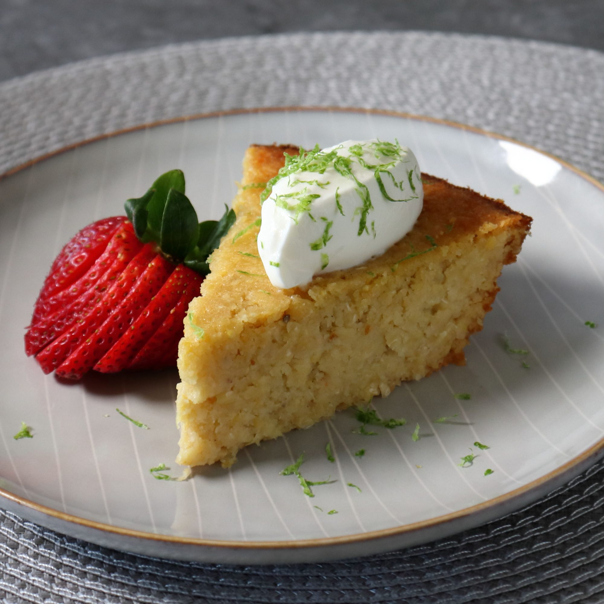

Habanero Honey Sweet Corn Cake

Description
This habanero honey sweet corn cake is spicy, sweet, savory, dense, moist, and very addictive! I also had no idea what to call this, as it's not really a cake, but it's also not a pie, or a pudding, or a custard, so I ended up with "cake" since it's inspired by sweet Mexican corn cake. No matter what you call this, it's phenomenal! Garnish with fresh fruit and top with crème fraiche, sour cream, Mexican crema, or whipped cream and freshly grated lime zest.
Ingredients
- 2 cups fresh corn kernels
- 1 habanero pepper, seeded and diced
- 2 large eggs
- ⅓ cup water
- ⅓ cup honey
- ⅔ cup all-purpose flour
- ½ cup unsalted butter, melted
- ⅓ cup cornmeal
- 1 teaspoon kosher salt
- ½ teaspoon baking powder
Steps
- Preheat the oven to 350 degrees F (175 degrees C). Generously butter a 9-inch pie dish.
- Combine fresh corn kernels, habanero pepper, eggs, water, and honey in a bowl. Puree with an immersion blender until almost smooth. Add flour, melted butter, cornmeal, salt, and baking powder; whisk until combined.
- Transfer mixture into the greased pie dish. Shake gently to settle mixture into the dish.
- Bake in the center of the preheated oven until golden brown and a wooden skewer inserted into the center of the cake comes out clean, 45 to 55 minutes. Let cool until warm or room temperature before serving.